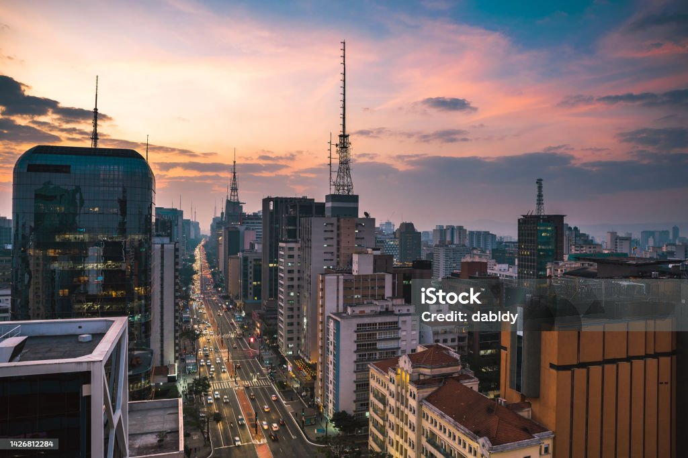
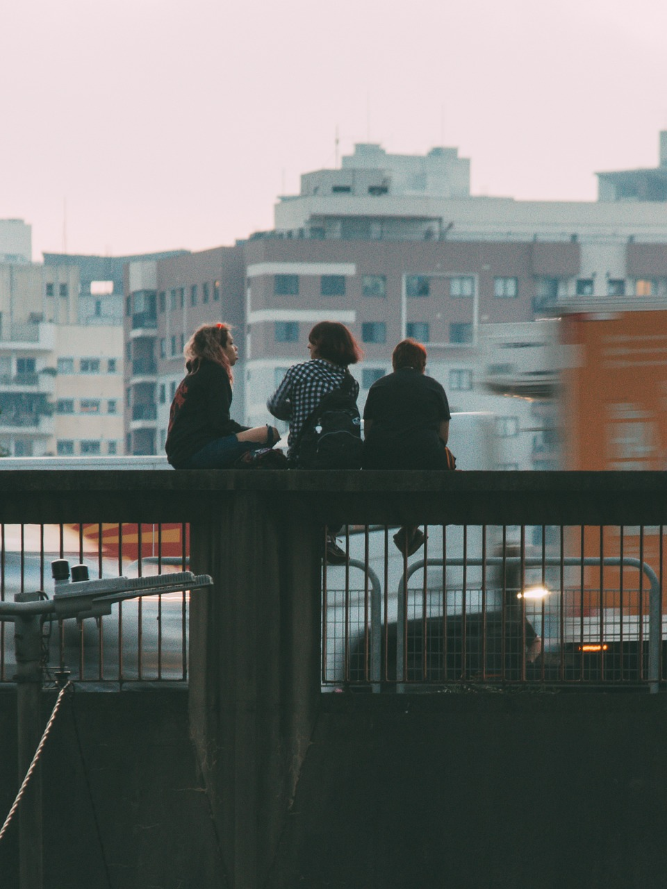

Foto 1

Fonte:
https://www.istockphoto.com/br/foto/vista-da-cidade-de-são-paulo-ao-anoitecer/
Foto 2
Fonte:
https://pixabay.com/pt/photos/edifícios-cidade-horizonte-1842205/
Foto 3

Fonte:
https://pixabay.com/pt/photos/amizade-amigos-paulista-são-paulo-7166375/
Foto 4
Fonte:
https://www.istockphoto.com/br/foto/vista-aérea-da-ponte-octavio-frias-de-oliveira-sobre-o-rio-pinheiros-ao-pôr-do-sol/